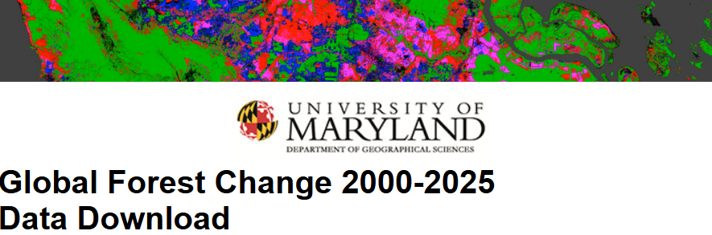

A UNESCO World Heritage site and the "Green Heart" of the Congo Basin's climate mitigation strategy.
Occupying about one-fifth of the Ituri Forest in the north-east of the Democratic Republic of the Congo, the Okapi Wildlife Reserve (Réserve de Faune à Okapis) is a sanctuary of immense biological and carbon value. Established in 1992 and covering 13,726 km², it contains the largest population of Okapis in the wild.
The Congo Basin is the "second lung" of the world. Unlike the Amazon, which has become a net carbon emitter in some areas, the Congo Basin remains a robust carbon sink. Within this basin, the Okapi Reserve protects some of the most carbon-dense primary forests remaining on Earth.

1992
1,372,625 Hectares
World Heritage in Danger
Illegal mining & deforestation